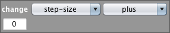

Categories: Control Groups Measure Movement Pen Secret Number Sensors Turtles
Special Units: Ants
change shape to
Use the drop down menu to choose a shape. The agent will change its shape to the option you select.
change turtle attribute

Change an attribute of a turtle to another value.
Use the the first drop down menu to select step-size, heading, color, pen-width, or secret-number . From the second drop down menu, choose plus, minus, equal to, or random up to. Enter a numeric value into the field. For example, if step-size was currently 1, and you executed the following command: change step-size plus 4, the turtle's updated step-size would be 5.
go invisible
This command hides the turtle. Even though you cannot see the turtle, it is still executing the commands.
go visible
This commands makes the turtle visible in the world.
set shape
Use the drop down menu to choose a shape. The agents will change their shape to the option you select.